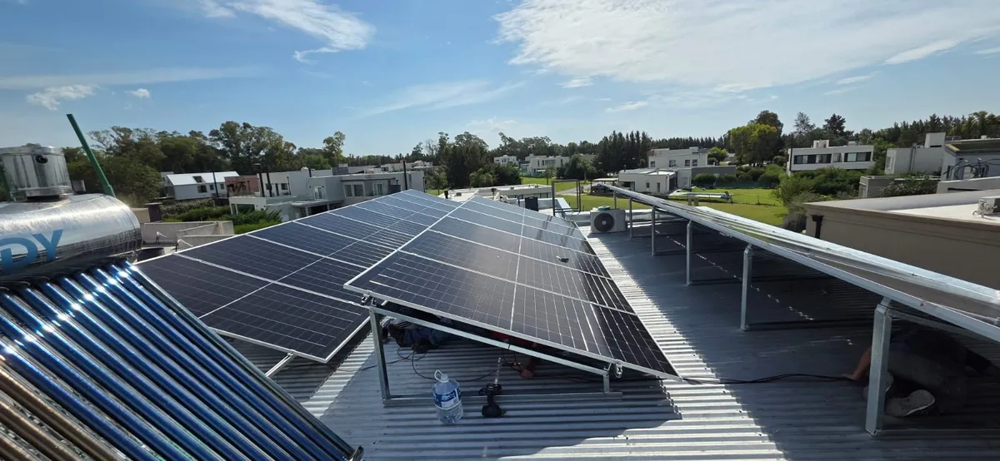
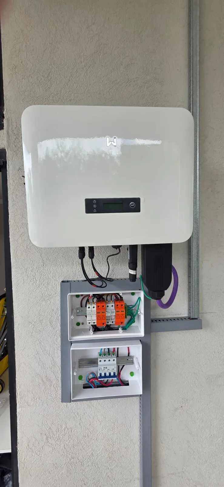
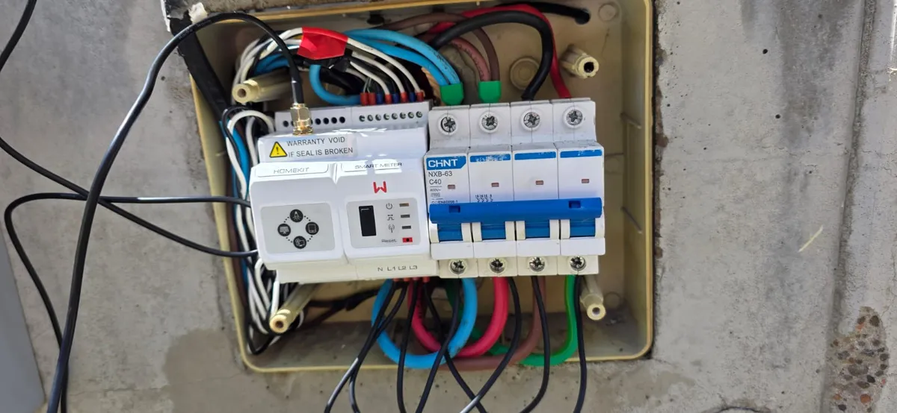

Que es un sistema solar Off Grid?
Un sistema solar Off Grid (tambien llamado "aislado" o "autonomo") es una instalacion de paneles solares que funciona de manera completamente independiente de la red electrica. A diferencia del sistema On Grid, el Off Grid almacena la energia generada en baterias, lo que te permite usar electricidad las 24 horas del dia, incluso de noche o en dias nublados.
Este tipo de sistema es la solucion ideal cuando no hay acceso a la red electrica, como en zonas rurales, campos, quintas de fin de semana, estancias, galpones alejados, o cualquier ubicacion donde llevar tendido electrico seria demasiado caro o directamente imposible.
Tambien es una opcion excelente como sistema de respaldo total para quienes quieren independizarse por completo de la distribuidora y no depender de cortes de luz ni de aumentos de tarifas.
Dato clave: Un sistema Off Grid de 3kW con baterias de litio LiFePO4 puede alimentar una casa de campo con heladera, luces, carga de celulares, bomba de agua y electrodomesticos basicos, con autonomia de 1 a 3 dias sin sol.

Como funciona un sistema solar Off Grid?
El sistema Off Grid tiene cuatro componentes principales que trabajan en conjunto para generar, almacenar y entregar energia limpia a tu hogar o establecimiento:
1. Paneles solares fotovoltaicos
Los paneles solares captan la radiacion solar y la convierten en corriente continua (DC). Instalamos paneles de marcas lideres como Jinko Solar y LONGi, con potencias de 550W a 600W por panel. La cantidad de paneles depende de tu consumo diario y de las horas de sol disponibles en tu zona.
2. Regulador de carga (controlador MPPT)
El regulador de carga es el cerebro del sistema. Controla como la energia de los paneles llega a las baterias, optimizando la carga para maximizar la vida util del banco de baterias. Los controladores MPPT (Maximum Power Point Tracking) son los mas eficientes, ya que extraen hasta un 30% mas de energia que los reguladores PWM basicos. Instalamos reguladores Victron SmartSolar y Growatt.
3. Banco de baterias
Las baterias almacenan la energia generada durante el dia para que puedas usarla de noche, en dias nublados o cuando la demanda supera la generacion instantanea. Son el componente mas critico y el que mas impacta en el costo y rendimiento del sistema. Mas adelante te explicamos las diferencias entre los tipos de baterias disponibles.
4. Inversor Off Grid
El inversor Off Grid (o inversor de onda pura) convierte la corriente continua (DC) de las baterias en corriente alterna (AC) a 220V, que es la que usan tus electrodomesticos. Instalamos inversores Growatt y Victron, que ofrecen proteccion contra sobrecargas, cortocircuitos y baja tension de bateria.
Importante: En un sistema Off Grid bien disenado, la autonomia tipica es de 1 a 3 dias sin sol. Esto significa que, incluso durante un periodo nublado, vas a seguir teniendo energia almacenada para cubrir tus necesidades basicas.
Baterias de litio LiFePO4 vs baterias de plomo-acido
La eleccion de las baterias es la decision mas importante en un sistema Off Grid. Estas son las dos opciones principales:
Baterias de litio LiFePO4 (fosfato de hierro-litio)
- Vida util: 4.000 a 6.000 ciclos (10 a 15 anos de uso real)
- Profundidad de descarga: hasta el 90-95% de su capacidad sin danarse
- Peso: hasta un 60% mas livianas que las de plomo-acido
- Mantenimiento: cero mantenimiento
- Eficiencia: 95-98% de eficiencia de carga/descarga
- Seguridad: no emiten gases, no se derraman, resistentes a temperaturas extremas
- Marcas: Pylontech, Growatt ARK, BYD
Baterias de plomo-acido (AGM o gel)
- Vida util: 500 a 1.500 ciclos (3 a 5 anos de uso real)
- Profundidad de descarga: solo hasta el 50% para no acortar su vida
- Peso: pesadas (un banco de 10kWh puede superar los 200 kg)
- Mantenimiento: requieren ventilacion y revision periodica
- Eficiencia: 80-85% de eficiencia
- Costo inicial: mas baratas, pero se reemplazan 3-4 veces en la vida del sistema
Nuestra recomendacion: Siempre que el presupuesto lo permita, recomendamos baterias de litio LiFePO4. Aunque la inversion inicial es mayor, el costo por ciclo es menor, duran 3 veces mas y no requieren mantenimiento. A largo plazo, son la opcion mas economica y confiable.
Cuando necesitas un sistema Off Grid?
El sistema solar Off Grid es la mejor opcion cuando se cumple alguna de estas condiciones:
- No tenes acceso a la red electrica y el costo de llevar tendido hasta tu propiedad es prohibitivo (muchas veces la distribuidora cobra mas por la extension de linea que lo que cuesta el sistema solar completo)
- Vivis o tenes una propiedad en zona rural como un campo, estancia, quinta de fin de semana, galpon, tambo o establecimiento agropecuario
- Necesitas alimentar equipos en ubicaciones aisladas como bombas de agua, sistemas de riego, camaras de seguridad, cercos electricos o iluminacion perimetral
- Queres independencia total de la red y no depender de cortes de luz, aumentos de tarifas ni de la calidad del servicio electrico de tu zona
- Tenes un emprendimiento o negocio en zona sin servicio y necesitas energia confiable para operar
- Buscas un sistema de respaldo completo que funcione automaticamente cuando se corta la luz

Cuanto cuesta un sistema solar Off Grid?
El costo de un sistema Off Grid es mayor que el de un On Grid porque incluye baterias y regulador de carga. El precio final depende del consumo diario, la autonomia deseada y el tipo de baterias elegido:
- Sistema de 3 kW con baterias de litio LiFePO4 (5kWh): desde USD 5.000 — ideal para casa de campo con consumo basico (heladera, luces, TV, celulares, bomba de agua)
- Sistema de 5 kW con baterias de litio (10kWh): desde USD 8.000 — ideal para vivienda permanente con aire acondicionado y electrodomesticos varios
- Sistema de 10 kW con baterias de litio (20kWh): desde USD 15.000 — ideal para establecimientos, comercios rurales o casas con alto consumo
Estos valores incluyen paneles, regulador de carga MPPT, banco de baterias, inversor Off Grid, estructura de montaje, cableado, protecciones y mano de obra de instalacion. El presupuesto es sin cargo y se personaliza para tu caso.
Financiacion disponible. Consultanos por las opciones de pago en cuotas. Un sistema Off Grid se paga solo: compara con lo que gastarias en un grupo electrogeno (combustible + mantenimiento) o con el costo de extensiones de linea electrica.
Ventajas del sistema solar Off Grid
- Independencia total de la red electrica — no dependes de la distribuidora, cortes de luz ni aumentos
- Energia las 24 horas — las baterias almacenan energia para uso nocturno y dias nublados
- Solucion donde no hay red — la unica alternativa viable (y limpia) para zonas rurales sin tendido electrico
- Cero costo de combustible — a diferencia de un grupo electrogeno, el sol es gratis
- Silencioso y limpio — sin ruido, sin humo, sin vibraciones
- Mantenimiento minimo — especialmente con baterias de litio (practicamente cero mantenimiento)
- Escalable — podes agregar mas paneles o baterias en el futuro si tu consumo crece
- Vida util de 25+ anos — los paneles siguen generando energia por decadas
- Monitoreo remoto — con inversores Growatt y Victron podes seguir la generacion y estado de baterias desde tu celular
- Aumenta el valor de tu propiedad — una propiedad rural con energia solar vale significativamente mas que una sin electricidad
Para quien es ideal el sistema Off Grid?
- Propietarios de campos, estancias y establecimientos agropecuarios
- Duenos de quintas de fin de semana o casas de campo
- Emprendimientos rurales: cabanas, glamping, turismo rural
- Galpones, depositos y talleres en zonas sin red
- Sistemas de bombeo de agua y riego
- Torres de comunicacion y camaras de seguridad en ubicaciones aisladas
- Familias que buscan independencia energetica completa
- Proyectos de vivienda sustentable y autosuficiente
Marcas que instalamos
Trabajamos exclusivamente con marcas lideres del mercado solar global, con garantia de fabricante y soporte tecnico:
- Paneles: Jinko Solar, LONGi, Astronergy (550W-600W, Tier 1)
- Inversores Off Grid: Growatt SPF, Victron MultiPlus, Victron EasySolar
- Reguladores MPPT: Victron SmartSolar, Growatt
- Baterias de litio: Pylontech US3000C, Growatt ARK, BYD HVS
- Estructuras: Aluminio anodizado, montaje coplanar o inclinado
- Protecciones: Seccionadores DC, fusibles, SPD, tablero de protecciones

Off Grid vs On Grid: cual te conviene?
La eleccion entre Off Grid y On Grid depende de tu situacion particular:
- Si tenes red electrica estable y tu objetivo principal es ahorrar en la factura de luz, el sistema On Grid es mas economico y tiene un retorno de inversion mas rapido
- Si no tenes red electrica o la conexion seria muy costosa, el sistema Off Grid es la unica solucion viable
- Si tenes red pero queres respaldo ante cortes frecuentes, considera el sistema hibrido que combina lo mejor de ambos mundos
Zona de cobertura
Instalamos sistemas solares Off Grid en toda la Zona Sur de Buenos Aires y alrededores:
- Guillermo Enrique Hudson
- Berazategui
- Florencio Varela
- Quilmes
- Almirante Brown
- Esteban Echeverria
- La Plata
- Avellaneda y Lanus
Tambien realizamos instalaciones Off Grid en zonas rurales de la provincia de Buenos Aires. Si tu propiedad esta fuera de estas localidades, consultanos igualmente — evaluamos cada caso.